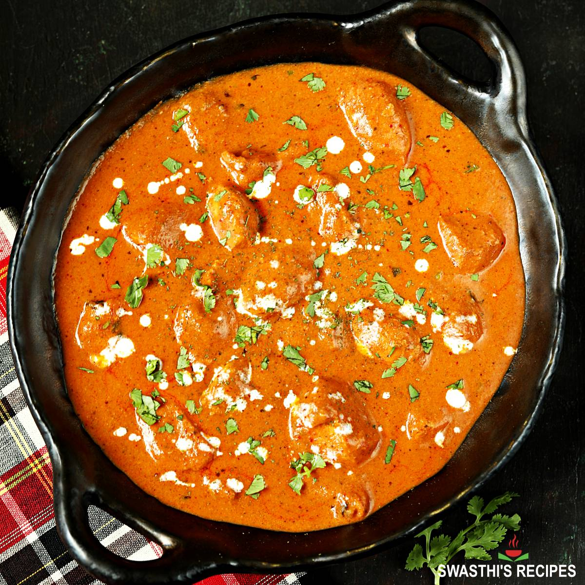

Recette du Butter Chicken

Description
Ingrédients :
- 400g de Blanc de Poulet
- 1 Pot de Yaourt Grec/Nature
- 400g de Tomates concassées en conserve
- 50g de Noix de Cajou
- 60g de Beurre demi-sel
- 15cl de Crème Liquide entière
- Citron
- Épices : Garam Masala, Paprika, Cumin, Gingembre et Ail
- Riz
Etapes :
- Mélangez le poulet avec le yaourt, le jus de citron, l'ail, le gingembre et les épices pour mariner 1 heure au frais.
- Faites saisir les morceaux de poulet à feu vif dans une poêle avec un filet d'huile, puis réservez-les.
- Avec le beurre, faites revenir les oignons, les tomates, les noix de cajou et le reste des épices dans la même poêle durant 10 minutes.
- Dès que le mélange a mijoté, versez le tout dans un blender et mixez jusqu'à obtenir une sauce parfaitement lisse et crémeuse.
- Faites chauffer le riz.
- Mettez la à chauffer à nouveau dans la poêle, ajoutez la crème, puis remettez-y le poulet pour laisser mijoter 10 minutes.